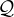
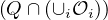
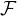
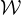
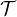

Figure 1: Caption
Mobile Robots are a class of underactuated systems with inherent non-holonomic constraints that restrict their maneuverability. In practice, they are often deployed in space-constrained operating workspaces. Therefore, motion planning for such systems becomes a complex task, and it is significantly challenging when the exact obstacle configuration is not known beforehand. The mathematical models (unicycle, bicycle,etc) for mobile robots are typically driftless , and exhibit the following structure,
| Ẋ = g(X,U) ; X ∈ Q ⊆ℝn,U ∈ [U m,UM] ⊂ℝm ; m < n | (1) |
Here, g(X) ∈ℝn×m is typically a lipschitz function. The configuration space is given by  and the set of obstacles is denoted by i. From these definitions, the free configuration space free is obtained as follows,
| free = {X ∈| X ∩ = ∅} | (2) |
Suppose the initial conditions are given by X0 at an initial time instant t0 and the target goal is given by Xf at a time instant t = tf, a candidate motion plan Xref(t) ∈ Q is deemed admissible for navigation under the following conditions,
Xref(t) is a solution to (1), with Xref(t0) = X0 and Xref(tf) = Xf.
Xref(t) ∈free, ∀t ∈ [t0,tf]
Under such conditions, the resulting motion plan Xref(t) is compliant for tracking through a careful design of a low-level tracking controller. (The final time argument condition could be optionally relaxed if required). During operation in unknown environments, such amiable motion plans must be generated during run-time to accomplish the mission objectives based on the sensed information.
IPC algorithms seek motion plans as a sequence of feedback controllers over domains in the navigable regions of the environment, rather than an explicit path/trajectory in the configuration space of the system. The IPC motion plans exhibit the following properties,
Each domain k is positively invariant under feedback controller k, and is associated with a goal set k ⊂k. Essentially, any initial state X(t) ∈k evolves such that it converges onto k under the influence of k while remaining within k during the entire duration. Given a system as in (1), the following holds true,
If X(t = t0) ∈k, then X(t = tf) ∈k and X(t) ∈k, ∀t ∈ [t0,tf]
The domains k are sequenced in such a way that their goal sets k lies on at least one other domain i, and each i ⊂ Qfree. (This ensures overall connectivity between the domains k)
| k ∈i, i≠k |
The initial configuration  in the navigation query is such that, ∈⋃
k.
in the navigation query is such that, ∈⋃
k.
The final configuration  in the navigation query is such that ∈k for some ‘k′.
Depending on the current state of the system, the k associated with the corresponding k is applied to the
system. Suppose the domains k are sequenced in such a way that each k lies on a unique i, i≠k, the system’s
trajectories are guaranteed to safely converge onto when the above-mentioned structures are established.
Mathematically, the geometric structure of k is a consequence of the underlying system dynamics for which
k is designed for stability. Essentially, k can be thought of as a geometric manifestation
of the feedback controller i. Therefore, given the existence of a feedback controller,
the problem of mobile robot navigation effectively becomes a problem of computational
geometry (involving the sequencing of k) which can often be solved much faster than
optimization/optimal control problems. This can potentially suit real-time implementations
where online decision-making in the face of uncertainties is vital during operation in unknown/dynamic
environments.